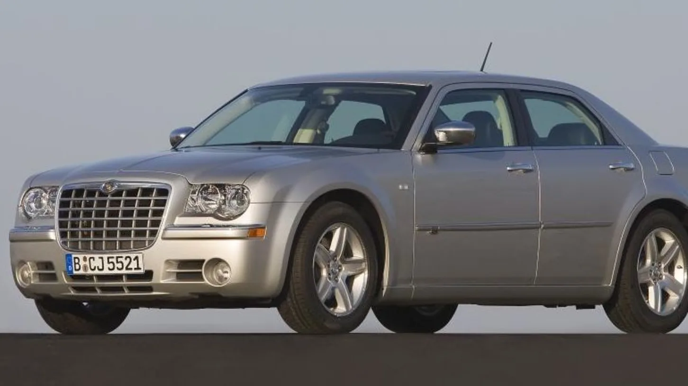
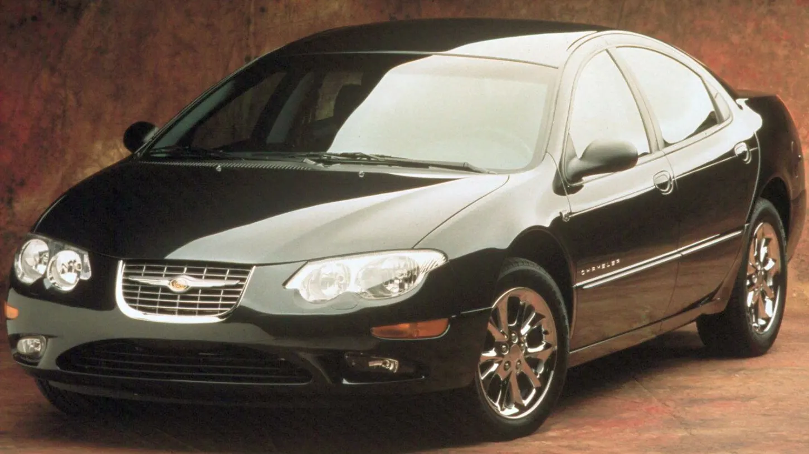
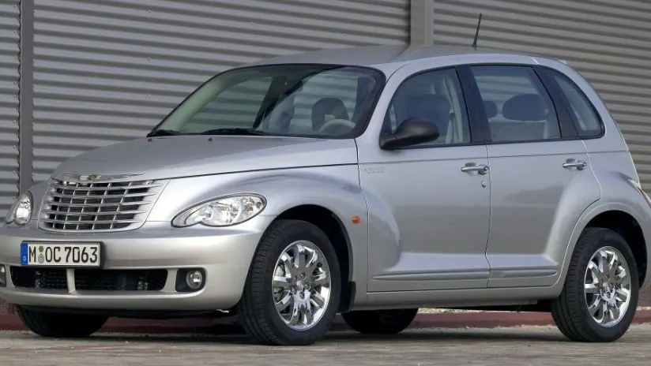
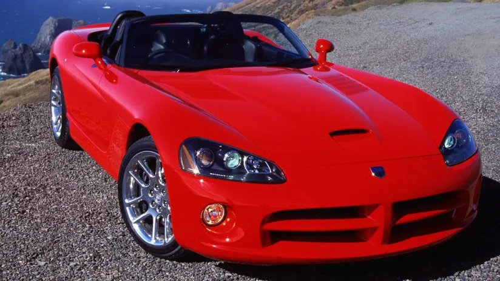

Chrysler 300C 5.7 V8 Automatik
Eigenschaften des Autos
- Modelljahr: 2005-2010
- Karosserie: Limousine
- Antriebsart: Heckantrieb
- Motor: 5,7-Liter-V8-Motor
- Leistung: 250 kW (340 PS)
- Drehmoment: 525 Nm bei 4200 U/min
- Beschleunigung: 0-100 km/h in ca. 6,4s
- Höchstgeschwindigkeit: ca. 240 km/h
- Getriebe: 5-Gang-Automatikgetriebe
- Verbrauch: kombiniert ca. 13,0 l/100km

Chrysler 300M 3.5 Automatik
Eigenschaften des Autos
- Modelljahr: 1998-2004
- Karosserie: Limousine
- Antriebsart: Frontantrieb
- Motor: 3,5-Liter-V6-Motor
- Leistung: 183 kW (250 PS)
- Drehmoment: 340 Nm bei 3950 U/min
- Beschleunigung: 0-100 km/h in ca. 8,4s
- Höchstgeschwindigkeit: ca. 230 km/h
- Getriebe: 4-Gang-Automatikgetriebe
- Verbrauch: kombiniert ca. 11,5 l/100km

Chrysler PT Cruiser 1.6 Classic
Eigenschaften des Autos
- Modelljahr: 2005-2010
- Karosserie: Kompakt-SUV
- Antriebsart: Vorderradantrieb
- Motor: 1,6-Liter-Vierzylinder-Benzinmotor
- Leistung: 85 kW (115 PS)
- Drehmoment: 147 Nm bei 4800 U/min
- Beschleunigung: 0-100 km/h in ca. 11,7s
- Höchstgeschwindigkeit: ca. 183 km/h
- Getriebe: 5-Gang-Schaltgetriebe
- Verbrauch: kombiniert ca. 8,6 l/100km

Chrysler Viper GTS
Eigenschaften des Autos
- Modelljahr: 1996-2002
- Karosserie: Coupé
- Antriebsart: Heckantrieb
- Motor: 8,0-Liter-V10-Motor
- Leistung: 331 kW (450 PS)
- Drehmoment: 664 Nm bei 3600 U/min
- Beschleunigung: 0-100 km/h in ca. 4,2s
- Höchstgeschwindigkeit: ca. 306 km/h
- Getriebe: 6-Gang-Schaltgetriebe
- Verbrauch: kombiniert ca. 18,8 l/100km/li>